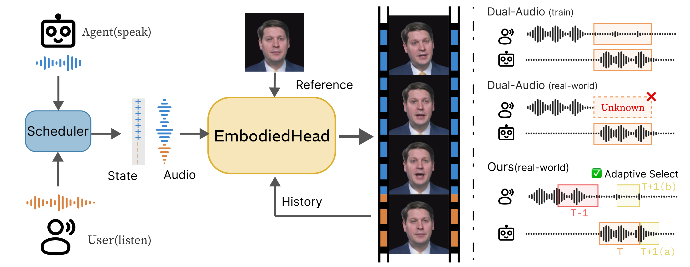
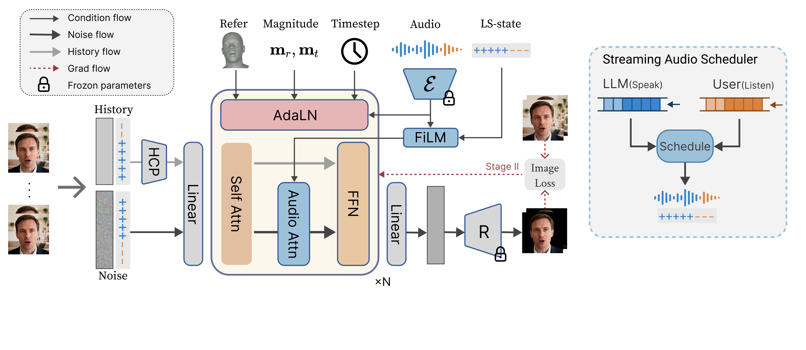

Real-Time Avatar Generation
Rectified-Flow DiT and differentiable rendering work together to produce high-fidelity results in as few as four sampling steps.

This is the same interactive demo module used by the live service backend. You can upload an identity, select the model and voice, switch modes, and launch the real-time listening-speaking avatar directly from this page.
We present EmbodiedHead, a speech-driven talking-head framework that equips LLMs with real-time visual avatars for conversation. A practical embodied avatar must achieve real-time generation, unified listening-speaking behavior, and high rendered visual quality simultaneously. Our framework couples the first Rectified-Flow Diffusion Transformer (DiT) for this task with a differentiable renderer, enabling diverse, high-fidelity generation in as few as four sampling steps. Prior listening-speaking methods rely on dual-stream audio, introducing an interlocutor look-ahead dependency incompatible with causal user–LLM interaction. We instead adopt a single-stream interface with explicit per-frame listening-speaking state conditioning and a Streaming Audio Scheduler, suppressing spurious mouth motion during listening while enabling seamless turn-taking. A two-stage training scheme of coefficient-space pretraining and joint image-domain refinement further closes the gap between motion-level supervision and rendered quality. Extensive experiments demonstrate state-of-the-art visual quality and motion fidelity in both speaking and listening scenarios.
EmbodiedHead unifies real-time listening and speaking behavior with a single-stream audio interface, explicit LS-state conditioning, and a differentiable rendering pipeline.

Rectified-Flow DiT and differentiable rendering work together to produce high-fidelity results in as few as four sampling steps.
A Streaming Audio Scheduler and explicit LS-state conditioning suppress listening-phase mouth artifacts while preserving rapid turn-taking.
Coefficient-space pretraining and image-domain refinement close the gap between motion supervision and the final rendered visual quality.
A full demonstration video of EmbodiedHead, including setup, interaction flow, and qualitative behaviors.